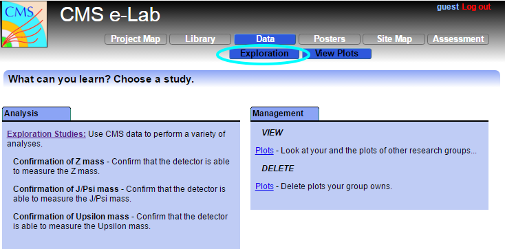

The LHC and CMS are designed for discovery science. Scientists must calibrate new instruments based on confirmed measurements and data before they announce new discoveries. Follow along as CMS matures.
Now that you've grasped the big picture and some fundamental physics behind the CMS experiment, you can work alongside physicists. Begin asking some questions of your own.

This screencast shows how to use the analysis tool.
Put it altogether. Describe your study in your logbook.
When you are finished, check to see if you should attend a milestone seminar.
To Learn More:
Rediscovering the weak force frontier - Read Fermilab Today's article in the right hand column on how physicists are confirming their detector is working correctly.